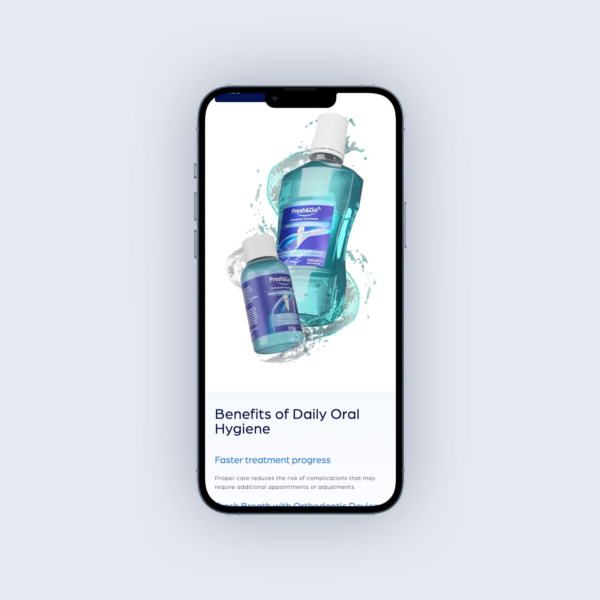
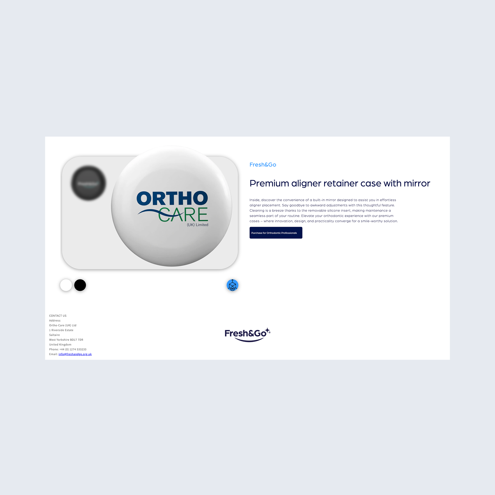

INTERACTIVE PRODUCT PAGES
To give customers full confidence before buying, I designed the product page with interactive, hands-on features. I collaborated with a 3D designer to obtain accurate retainer case CAD files, allowing me to integrate a live 3D viewer directly onto the page so users can inspect every angle of the product. Below the main image, interactive color-swatch icons enable real-time previews across the product range. The layout maintains a minimalist, clean aesthetic that perfectly aligns with Fresh&Go's clinical yet modern brand identity.
IN HINDSIGHT / NEXT ITERATION
While these controls successfully enable real-time customization (color variants, liquid volumes, and pack sizes), they currently lack a unified design system. Because each product page uses a visually distinct switcher style, future iterations would focus on creating a standardized component library. Moving to a single, scalable toggle system—such as uniform pill selectors or standardized swatches—would streamline the mobile viewport, lower cognitive load, and create visual harmony across the entire catalog.
